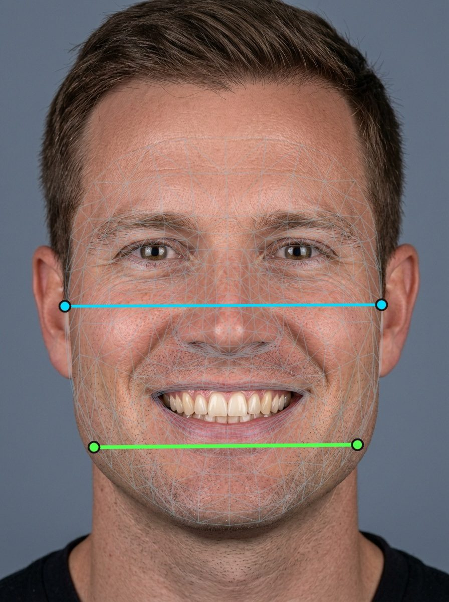
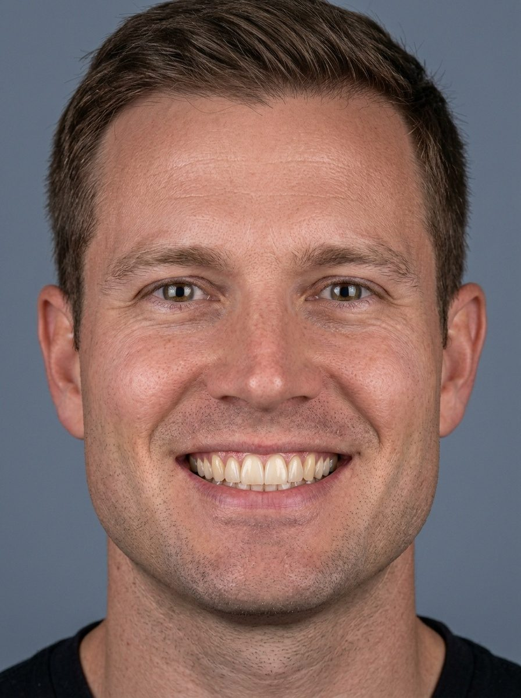
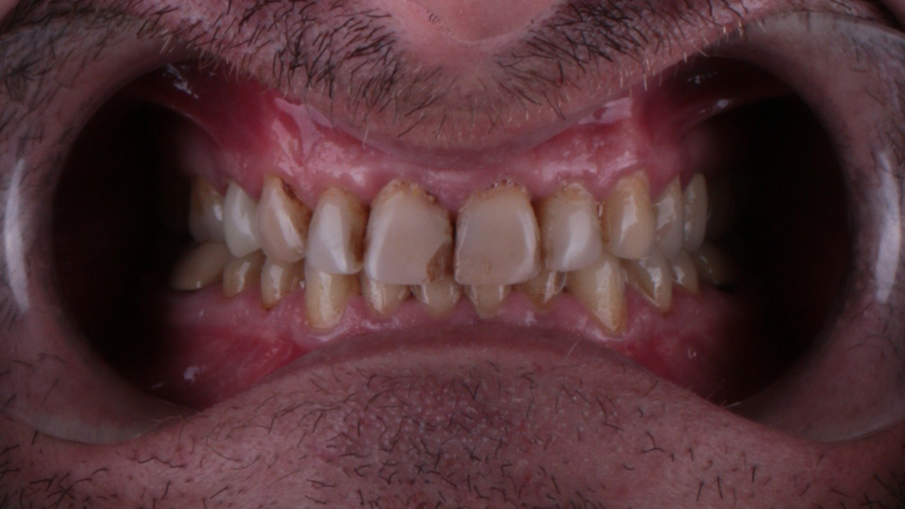
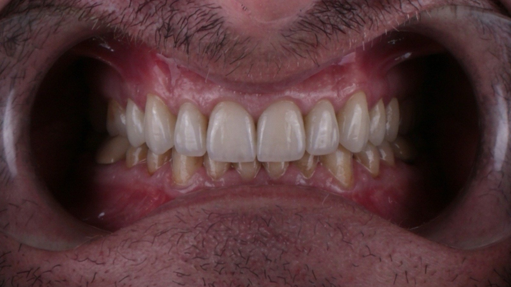
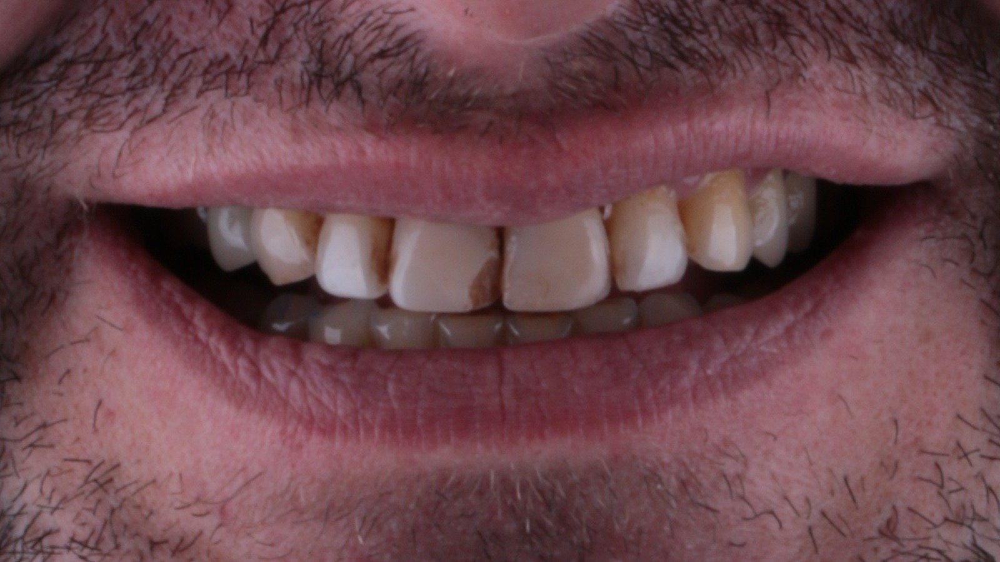
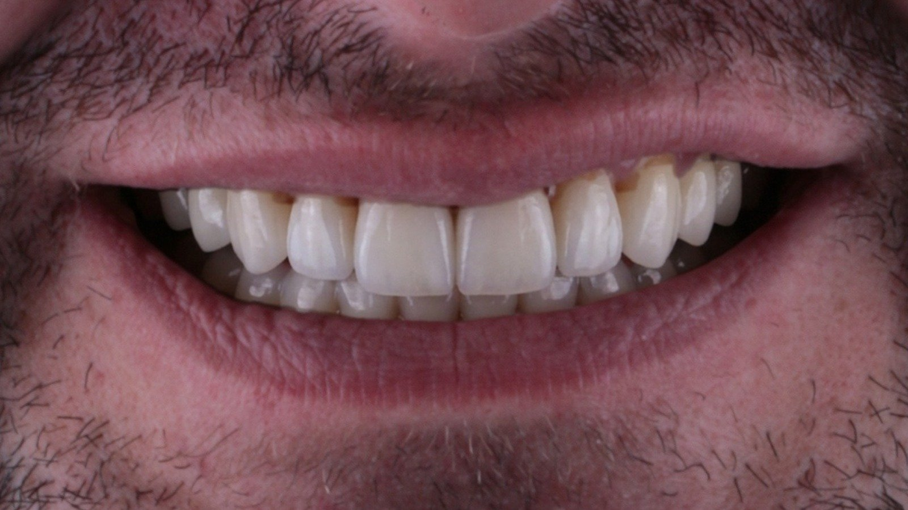

Ölçüm
İki kareden diş oranı, orta hat, kesici kenar görünürlüğü ve diş eti hattı otomatik ölçülür.
Estetik vakalar için dijital gülüş tasarımı · Çok ajanlı Ar-Ge stüdyosu
Diş hekimi ve dijital laboratuvar için. İki fotoğraftan 441 formluk kütüphaneden gerekçeli form önerileri, kılavuz çizgili dijital önizleme ve ExoCAD iş paketi hazırlıyoruz.
Vaka kabulü yeni kanalla yakında; şimdilik yalnız iletişim.
Beş adım. Sizden istenen: fotoğraf, seçim ve onay.
İki fotoğrafla çalışılır: tam yüz gülüş karesi ve ekartörlü kare. Telefon kamerası yeter.
Fotoğraflardan diş oranı, orta hat, kesici kenar ve diş eti hattı ölçülür.
Size form listesi gelir. Birini seçersiniz ya da istediğiniz hattı yazarsınız.
Seçtiğiniz formla kılavuz çizgili önizleme hazırlanır; kaydırıcıyla önce/sonra karşılaştırırsınız.
Onayladığınız tasarım ExoCAD iş paketine dönüşür.


Gerçek hasta fotoğrafı değildir. %100 sentetik/kurgusal model üzerinde algoritmik morfoloji simülasyonudur. Tanı, tedavi veya tıbbi cihaz sonucu değildir. Sonuçlar kişiden kişiye değişir; klinik karar hekime aittir. Tek sentetik örnek gösterimidir (n = 1); başka yüzlerde sonuç farklı olabilir.
Not a real patient. 100% synthetic face · algorithmic morphology simulation, not diagnosis/treatment/medical device. Clinical decisions belong solely to the dentist. Single synthetic example demonstration (n = 1); results may differ on other faces.

ÖNCE
SONRA
ÖNCE
SONRAÖlçüm ve form sıralamasını otomasyon yapar; her çıktıyı stüdyo kontrol eder. Karar hekimindir.
İki kareden diş oranı, orta hat, kesici kenar görünürlüğü ve diş eti hattı otomatik ölçülür.
Ölçülere ve yüz oranlarına göre 441 formluk kütüphaneden 5 öncelikli, 3 alternatif form sıralanır; her birinin yanında gerekçesi vardır.
Seçilen form hastanın fotoğrafına kılavuz çizgileriyle oturtulur; diş sayısı ve kontur otomatik bir kontrolden geçmeden size gönderilmez.
Önizlemeyi tek ekranda görür, onaylar ya da düzeltme istersiniz; onaydan sonra ExoCAD iş paketine hazırlanır.
Sınır: Atlas teşhis koymaz, tedavi önermez, klinik sonuç vaat etmez; karar hekimindir.
Aynı çok ajanlı mimarinin canlı ölçüm karnesi, çok sesli Kıvılcım tez üretim yöntemi ve yayınlanan araştırma yazıları.
Orkestra Atlas (Argon) ve Vezir Anu (Claude) yönetiminde çalışan çok ajanlı sistem; 6 kapılı hipotez fabrikası (QAJAN), kör yargıç ve saatlik doğrulanan canlı sayaçlar.
Birbirini duymayan model ailelerinden (Claude, Gemini, Grok, yerel modeller) tez, karşı tez ve düşer testi üretme yöntemi; 49 turun gerçek karnesi.
Aynı beyan, ölçü ve düşer testi disipliniyle yürüyen algoritmik ticaret, klinik veri analizi, sınav hazırlık koçluğu ve permütasyon ajanları.
Yaşayan Yazılar · Kıvılcım Sentezleri
Kare çeneyi “oval” sanan eğitimsiz model yuvarlak feminen diş seçiyor. 478 noktalı 3B ağ + 1.000 iterasyon QLoRA: yüz şekli isabeti %0 → %90,6, hedef hat %0 → %100 (n = 32 kilitli test yüzü); %100 sentetik yüzde canlı 3B modül.
Aynadaki İkiz (SHA-256), %98,6 Bürokrasi Kapanı ve 76 Saniyelik MLX QLoRA Hasadı: Atlas'ın kurallarıyla eğitilen 3B model (%93,8), kuralsız 31B modeli (%75,0) nasıl geçti?
1963'te rafa çıkıp 2009 dolayında kalkan üretim; kanundaki asimetri, vergi tabanı ve en gerçekçi çıkış yolu.
Proje günlüğündeki tüm yazıları incele (7 yaşayan yazı · TR & EN) →
İki kare: tam yüz gülüş karesi ve ekartörlü kare; gün ışığı ya da düz ışık. Telefon kamerası yeter. Varsa ağız içi tarama eklenebilir. Çalışma öncesinde hasta onamı alınmalı; dosya adlarında hasta kimliği bulunmamalıdır.
5 öncelikli ve 3 alternatif form önerisi, her birinin yanında kısa gerekçe; seçtiğiniz formla kılavuz çizgili önce/sonra önizleme (tek dosya); onayınızdan sonra ExoCAD iş paketi.
Evet. Form önerisi ve önizleme ExoCAD olmadan da size gelir. ExoCAD iş paketi yalnız dizim adımına geçilecekse hazırlanır.
Fotoğraflar stüdyonun cihazlarında işlenir ve saklanır. Önizleme için bulut görsel modele yalnız kimliksiz ağız kırpımı gönderilir; ad, dosya adı ve kimlik bilgisi hiçbir yere gitmez. Silinmesini istediğinizde yazmanız yeterli. Ayrıntı: Gizlilik ve veri notu.
İletişim e-postası üzerinden bilgi alabilirsiniz; süre ve koşullar yanıtta yazılır. Yazılım satmıyoruz; her vakayı tek tek hazırlıyoruz.
Sorularınız ve iş birliği için.
Vaka kabulü yeni kanalla yakında; şimdilik yalnız iletişim.
Daha fazlası: English